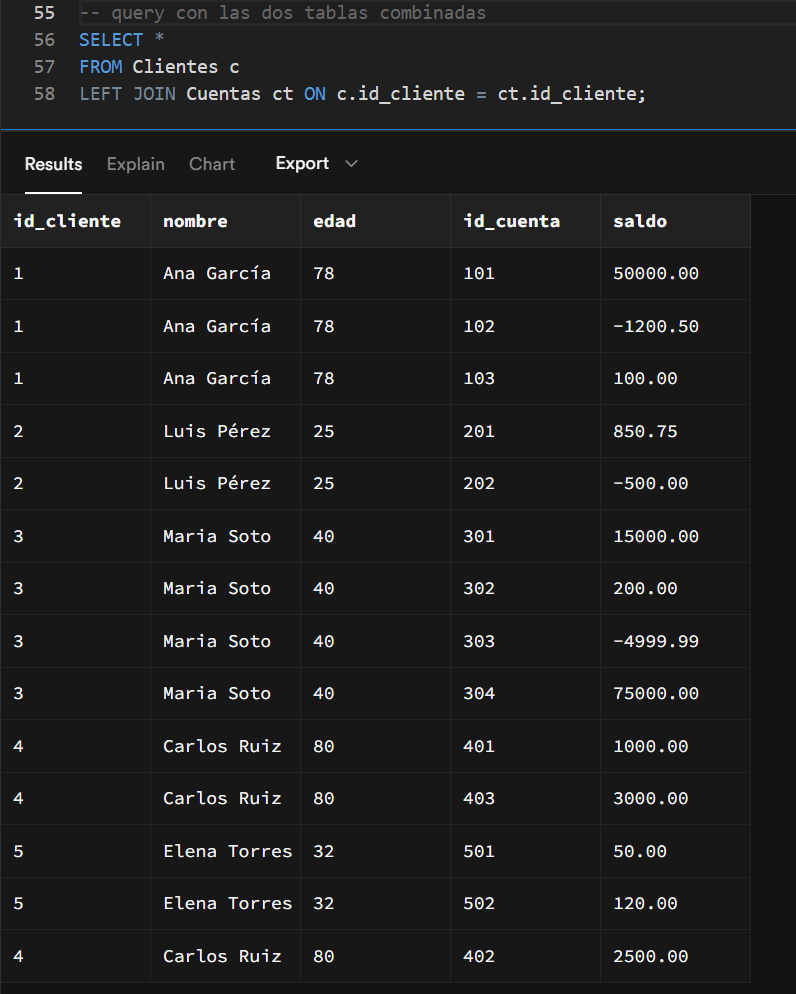
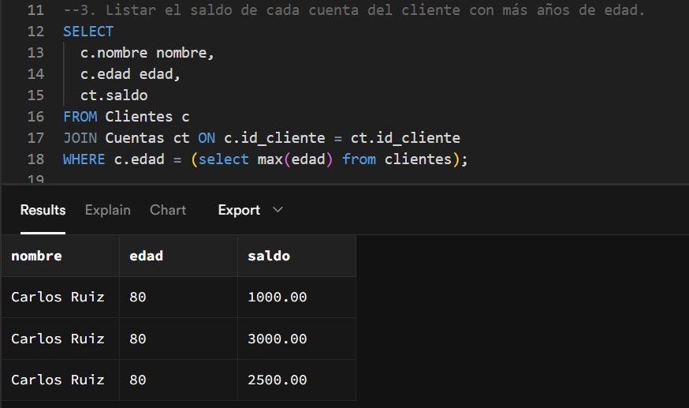
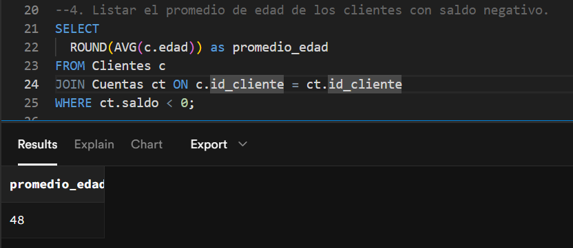
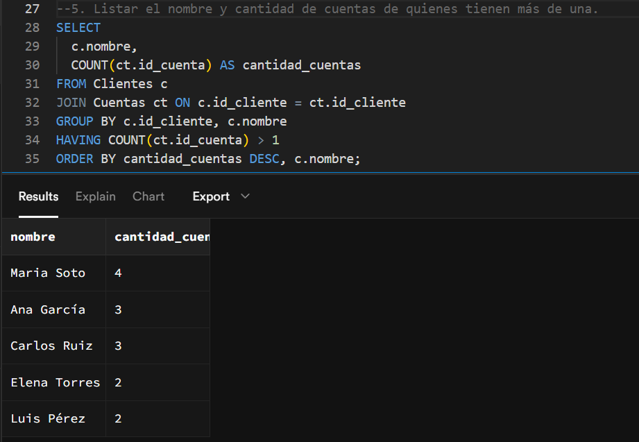
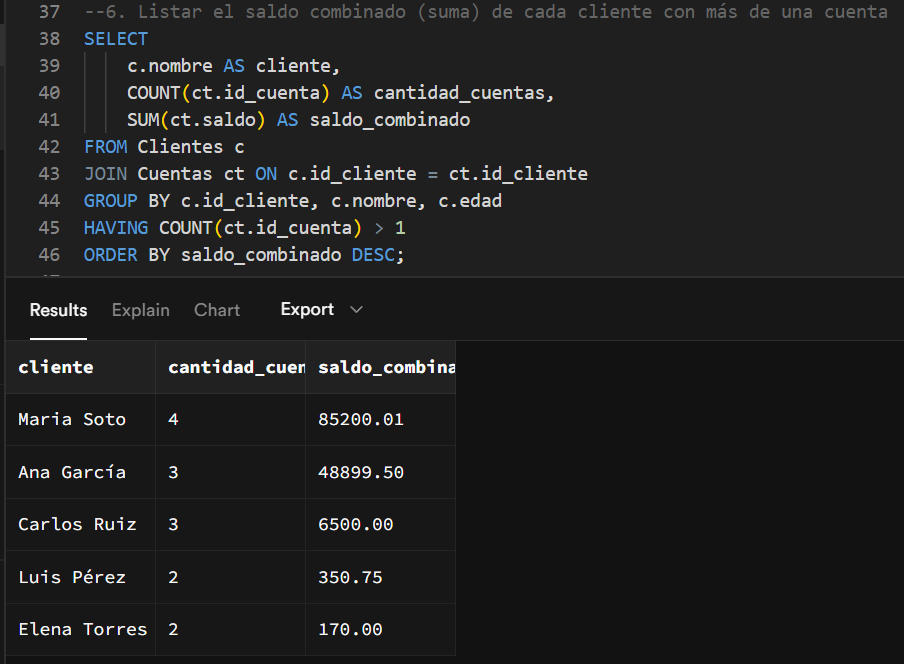
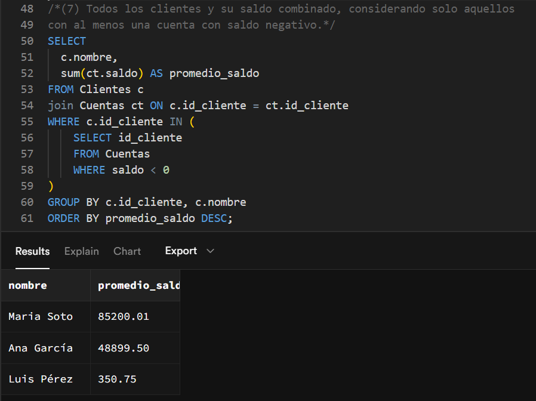

2. Datos de tablas combinadas

3. Listar el saldo de cada cuenta del cliente con más años de edad.

4. Listar el promedio de edad de los clientes con saldo negativo.

5. Listar el nombre y cantidad de cuentas de quienes tienen más de una.

6. Listar el saldo combinado (suma) de cada cliente con más de una cuenta

7. Todos los clientes y su saldo combinado, considerando solo aquellos con al menos una cuenta con saldo negativo.
